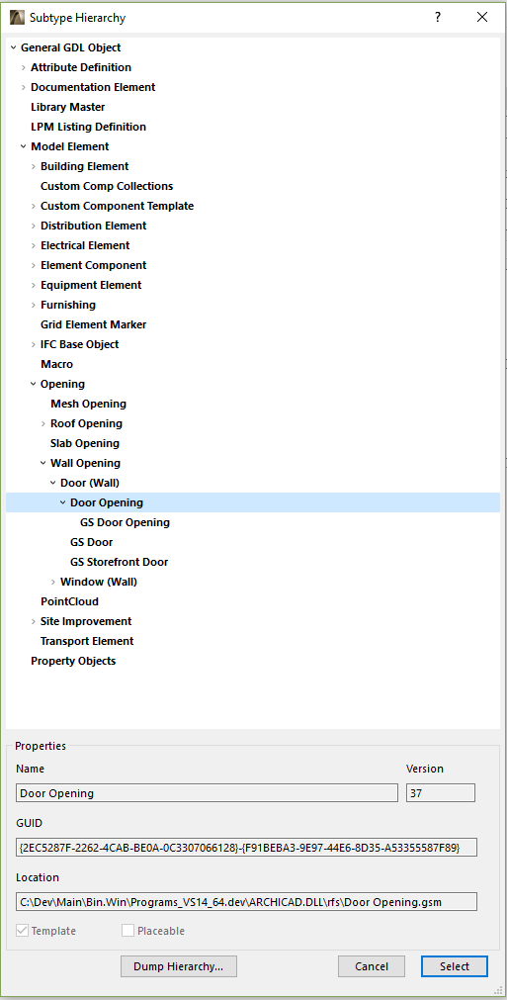

Library Part Subtypes
This section gives an overview of the library part subtype idea introduced in Archicad 8.
Library Part Global Unique IDs
From Archicad 8 every library part has unique identification, that is when one saves a library part, an ID is generated and stored into the library part file. This unique ID consists of two parts: a main and a revision GUID. Each one is a standard 128-bit unique identification string. The revision GUID can change when you modify and re-save the library part, while the main GUID remains the same for the whole life-cycle of the library part.
By this identification a certain library part can be referred everywhere in the world, no matter what its actual name is.
Subtype Hierarchy
When creating a new library part you have to select a parent subtype specifying what properties the new library part would inherit. This action also determines the position of the library part in the subtype hierarchy tree. The whole ancestry information up to the Root Object is saved into a special section of the library part, that makes possible to reconstruct the hierarchy later.
You can find the subtype hierarchy tree, if you open the GDL editor and at the Details page you choose the Select Subtype button. The subtype nodes can be identified by their library part GUID. Whenever you need to refer to a library part, you can get its GUID string by copying from the Select Subtype dialog box.
For example you can see below where the door is located in the hierarchy tree.

You can find some unique ID definitions of the internal subtype templates listed below. Be careful, always check the ID-s in the Select Subtype dialog, because these ID-s may change.
RootID "{F938E33A-329D-4A36-BE3E-85E126820996}-{00000000-0000-0000-0000-000000000000}" AttributeDefinitionID "{12974DCB-3EC8-4A56-8738-E5495F5213A4}-{00000000-0000-0000-0000-000000000000}" DocumentationElemID "{B176ABF1-5813-478F-926B-28EE7C5DC1F7}-{00000000-0000-0000-0000-000000000000}" LibraryMasterID "{66B148A3-EF82-455A-80D9-AB9AFB5B6B9C}-{00000000-0000-0000-0000-000000000000}" ModelElemID "{103E8D2C-8230-42E1-9597-46F84CCE28C0}-{00000000-0000-0000-0000-000000000000}" PropertiesID "{8F157ABA-E5C9-48B6-9DCE-68F0F02A808E}-{00000000-0000-0000-0000-000000000000}" OpeningID "{6ACDA889-69B2-4EC5-936C-CB1DA7032A92}-{00000000-0000-0000-0000-000000000000}" WallOpeningID "{F6AE9687-2BC7-4D47-88C9-8F793E1DE2D6}-{00000000-0000-0000-0000-000000000000}" WallDoorID "{11E85B84-8DD1-491B-A2FE-337454A91545}-{00000000-0000-0000-0000-000000000000}" WallDoorOpeningID "{2EC5287F-2262-4CAB-BE0A-0C3307066128}-{00000000-0000-0000-0000-000000000000}"
You also have a bunch of goodie functions that help you manipulating with library part GUIDs, such as: APIAny_GetBuiltInLibpartUnIdID, APIAny_CheckLibPartSubtypeOfID, APIAny_CompareLibPartUniqueIdsID, APIAny_GetElemCreatorToolUnIdID, APIAny_SetEmptyHoleUnIdID, and APIAny_GetElemLibPartUnIdID.
Registering Subtypes into the Toolbox
You may also add new object types to the Archicad toolbox. When you register a subtype with the ACAPI_Register_Subtype function, you extend the element database with a new element type, which has its own element defaults, settings dialog, and even a toolbox item. This functionality enables your add-on to distinguish easier its own special objects from other ones.